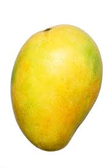

Tentang Buah
Mangga
 Buah Mangga termasuk kelompok buah batu (drupa) yang berdaging, dengan ukuran dan bentuk yang sangat berubah-ubah bergantung pada macamnya, mulai dari bulat (misalnya mangga gedong), bulat telur (gadung, indramayu, arumanis) hingga lonjong memanjang (mangga golek). Panjang buah kira-kira 2,5–30 cm. Pada bagian ujung buah, ada bagian yang runcing yang disebut paruh. Di atas paruh ada bagian yang membengkok yang disebut sinus, yang dilanjutkan ke bagian perut.
Kulit Buah agak tebal berbintik-bintik kelenjar; hijau, kekuningan atau kemerahan bila masak. Daging buah jika masak berwarna merah jingga, kuning atau krem, berserabut atau tidak, manis sampai masam dengan banyak air dan berbau kuat sampai lemah. Biji berwarna putih, gepeng memanjang tertutup endokarp yang tebal, mengayu, dan berserat. Biji ini terdiri dari dua keping; ada yang monoembrional dan ada pula yang poliembrional.
Khasiat Mangga
- Melindungi dari kanker
- Menjaga kesehatan mata
- Menurunkan risiko diabetes
- Kaya antioksidan
- Meningkatkan kekebalan tubuh
- Menyehatkan pencernaan
- Menjaga kesehatan jantung
Daftar Harga :
| Jenis Mangga | Harga | |
|---|---|---|
| PerKilo | PerBiji | |
| Mangga Apel | 50.000 | 5.000 |
| Mangga Golek | 60.000 | 6.000 |
| Mangga Manalagi | 70.000 | 7.000 |
| Mangga Pakel | 55.000 | 5.500 |